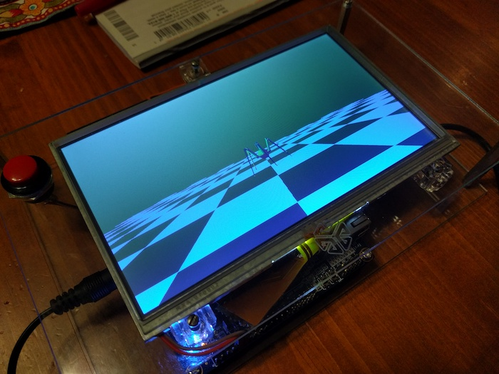
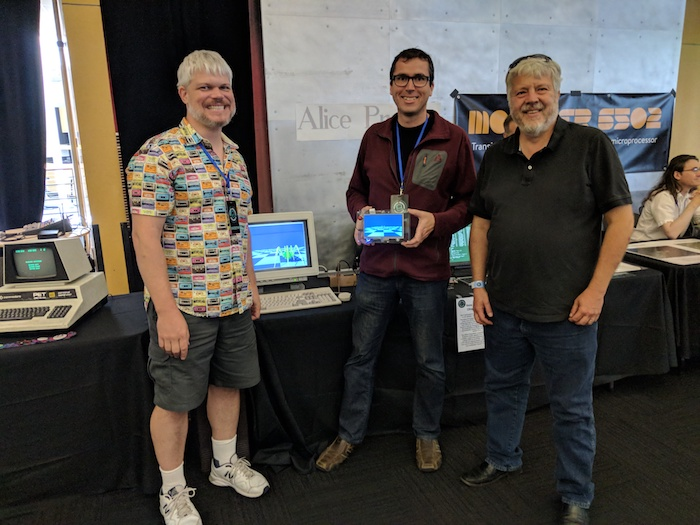

Alice 4
One lesson we learned from the Alice 3 project was that having existing software for a platform provided great motivation. For the Alice 4 we wanted to use a more advanced CPU than the Z80 that had powered the previous three projects. Brad wanted to do something more ambitious with an ARM (since he worked there) and Lawrence wanted to learn how to program FPGAs. Finally, the project had to have nostalgic value, as always.
We decided to make a portable tablet that did nothing but run mid-1980's Silicon Graphics (SGI) demos. The demos were famous. They were pre-installed on all SGI machines for a decade, and they induced instant nostalgia in anyone who had spent time with those wonderful workstations. Both of us had worked at SGI and had used the machines extensively.
We used the Altera Cyclone V SoC chip on the DE0-Nano-SoC board (also known as the Atlas-SoC). The chip provided a dual-core ARM Cortex A9 and a fairly capable FPGA. The board added 1 GB of memory, USB, Ethernet, an accelerometer, and plenty of GPIO pins.
We added a seven-inch touchscreen LCD, an LCD driver, a touch screen controller, and a simple red “Home” button, all from Adafruit. Brad designed a PCB to connect these pieces together.

The ARM runs Linux and the demos (which we found in a tar file on an ancient FTP site). Brad wrote a replacement IrisGL library, which performs the transformation, clipping, and lighting, and creates an in-memory list of 2D triangles to rasterize. The FPGA rasterizes them, performing color interpolation and Z buffering. The FPGA also scans the frame buffer to the LCD.
The tablet runs “buttonfly” (a 3D menu system), a 3D SGI logo, “insect”, “arena”, “bounce”, “jello”, and “Ideas in Motion”. The demos are slightly modified to make use of the touch and tilt interface.
In August 2017 we showed the Alice 4 at the Vintage Computer Festival West in Mountain View, California, along with the Alice 3 running CP/M and a non-functional Alice 2. We were thrilled to meet Thant Tessman, the original author of several of our SGI demos. Here's a photo of Brad, Lawrence, and Thant. Behind us is a real SGI Personal Iris from 1989. Lawrence is holding the Alice 4. Both the Iris and the Alice 4 are running “insect”, one of the classic demos that Thant wrote in the mid-1980s.

(Lawrence was so impressed by “insect” in 1989 that he wrote a Pascal version on his 286 EGA PC. You can run that version in his web-based Turbo Pascal emulator. Type “W”, then “spider.pas”, then “R”.)
Lawrence has been asked which Verilog and FPGA books he found useful. He thought that Verilog by Example was a good intro to the language. Then FPGA Programming by Verilog Examples was outstanding. It taught a bit of Verilog, but it mostly showed how to structure code to do various things (like state machines). One of the best technical books he'd ever read. He also read Advanced Chip Design because it was repeatedly recommended on Amazon (in other books' reviews), but he didn't get a lot out of it.